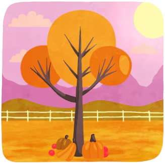

Log In
Log In
Everything About WebPageYes
Welcome to this homework assignment. Here you'll find... this homework assignment.
Summer
In the summer, temperatures may increase to the hottest of the year. If they spike too high, heat waves or droughts may cause trouble for people, animals, and plants. For example, in the summer of 2003, the high temperatures claimed more than

Autumn
In the autumn, or fall, temperatures cool again. Plants may begin to grow dormant. Animals might prepare themselves for the upcoming cold weather, storing food or traveling to warmer regions.
Various cultures have celebrated bountiful harvests
Winter
Winter often brings a chill. Some areas may experience snow or ice, while others see only cold rain. Animals find ways to warm themselves and may have changed their appearance to adapt. "In a similar way to the Autumnal theme, Winter festivals celebrate
Spring
In the spring, seeds take root and vegetation begins to grow. The weather is warmer and often wetter. Animals wake or return from warmer climates, often with newborns. Melting snow from the previous season, along with increased rainfall, can cause flooding
Which is to say, AI generated by Magnific.
I didn't know this when I picked them and don't currently want to spend time rectifying the issue.
Text lifted wholesale from Live Science